Explora Mérida a través de su Historia
-
Fundación de Augusta Emerita por orden del emperador Augusto para acoger a veteranos de las legiones V Alaudae y X Gemina. Se convierte en capital de la provincia romana de Lusitania.
-
Mérida se consolida como sede arzobispal del cristianismo en Hispania. Construcción de mosaicos, basílica y consolidación del poder visigodo bajo obispos emergentes.
-
Mérida es tomada por el rey visigodo Eurico; pasa a ser uno de los ducados visigodos.
-
Conquista musulmana por Musa ibn Nusayr. Comienza la dominación árabe; se construye la Alcazaba.
-
Sublevación mozárabe en Mérida. 'Abd al-Rahmán II expulsa a la población y refunda la ciudad con una guarnición militar.
-
La rebelión liderada por Ibn Marwan lleva a la caída de la ciudad y su desmantelamiento parcial como castigo.Reconquista cristiana a cargo de Alfonso IX de León. La ciudad se integra en la Orden de Santiago y pierde su anterior rango arzobispal.Mérida sufre daños durante la Guerra de la Independencia (1811). Se reconstruyen muchos monumentos históricos y se restaura la ciudad.Construcción e inauguración del Puente de Hierro sobre el Guadiana, la primera arquitectura de hierro en la ciudad.Fundación del Liceo de Mérida, institución cultural clave en la regeneración artística y social.Inauguración del Festival Internacional de Teatro Clásico de Mérida con Medea; reactivado en 1953 con Fedra. Desde entonces es un referente cultural.Mérida se convierte en la capital de la Comunidad Autónoma de Extremadura.Declarada Patrimonio de la Humanidad por la UNESCO en reconocimiento a su conjunto arqueológico romano.Celebración del festival de recreación romana Emerita Lvdica; en 2022 declarado Fiesta de Interés Turístico Regional, y en 2025 alcanza su XV edición.
Recintos Arqueológicos y Museos
Mérida, antigua Augusta Emerita, constituye un patrimonio arqueológico único declarado Patrimonio de la Humanidad por la UNESCO en 1993 por su conjunto excepcional de monumentos romanos, visigodos y musulmanes que se integran en el núcleo urbano moderno.
Teatro Romano
Construido entre los años 16 y 15 a.C. bajo la supervisión del cónsul Marco Vipsanio Agripa, es considerado el símbolo arquitectónico de Mérida. A lo largo de siglos fue enterrado parcialmente y redescubierto a inicios del siglo XX. Desde 1933 acoge el Festival Internacional de Teatro Clásico, revitalizando su uso simbólico y cultural.
Comprar entrada
Arte Romano
Anfiteatro Romano
Inaugurado en el 8 a.C., este edificio se proyectó junto al teatro como parte de un complejo urbano dedicado a los espectáculos públicos. Podía acoger a unos 15 000 espectadores en eventos de gladiadores y venationes. Tras siglos de abandono, fue excavado en el siglo XX y restaurado respetando su autenticidad original.
Comprar entrada
Arte Romano
Templo de Diana
Ubicado en el antiguo foro municipal, este templo romano dedicado al culto imperial es el único en buen estado de conservación en Mérida. Su ubicación central refleja la organización urbana del espacio público romano. Forma parte integral del conjunto monumental de la ciudad como Patrimonio Mundial.
Comprar entrada
Arte Romano
Circo Romano
Construido probablemente en tiempos de Tiberio, el circo mide más de 400 m de largo por 115 m de ancho. Con capacidad para cerca de 30.000 espectadores, fue escenario de carreras de de bigas y cuadrigas. Actualmente incluye un centro de interpretación que facilita su comprensión
Arte Romano
Acueducto de los Milagros
Construido en el siglo I d.C. para trasladar agua desde el embalse de Proserpina hasta Augusta Emerita. Conserva más de 800 m de arquería con 73 pilares de granito y ladrillo, y alcanza hasta 25 m de altura. Es el acueducto mejor conservado de Mérida.
Comprar entrada
Arte Romano
Puente Romano
Obra monumental de ingeniería del siglo I a.C. sobre el río Guadiana. Mide aproximadamente 792 m y cuenta con 60 arcos, algunos ocultos hasta 1990. Fue vital para el crecimiento urbano de la ciudad romana.
Comprar entrada
Arte Romano
Arco de Trajano
Puerta monumental del foro provincial, construida en granito. Mide casi 14 m de altura y 8,7 m de luz, originalmente recubierta en mármol. Nombrado arbitrariamente como “de Trajano” aunque sin inscripción directa del emperador.
Comprar entrada
Arte Romano
Casa del Mitreo
Residencia romana del siglo I o II d.C., organizada en torno a tres patios. Destaca el mosaico cosmológico y las pinturas murales. Declarada Bien de Interés Cultural en 1990 y vinculada al culto a Mitra.
Comprar entrada
Arte Romano
Alcazaba Árabe
Fortificación del siglo IX construida por Abderramán II, es la más antigua conservada en la península. Encerraba un recinto cuadrado de 130 m de lado, con muros de granito reutilizado y múltiples torres, y un aljibe subterráneo para almacenar agua.
Comprar entrada
Arte Árabe
Basílica de Santa Eulalia y el Hornito
La Basílica de Santa Eulalia, primer templo cristiano en Hispania (siglo V), se alza sobre el túmulo martirial, con nave medieval y cripta arqueológica. Frente a ella, el Hornito, capilla barroca del XVII, hecha con mármoles romanos del templo de Marte.
Comprar entrada
Arte Cristiano
Museo Nacional de Arte Romano (MNAR)
Diseñado por el prestigioso arquitecto Rafael Moneo e inaugurado en 1986, este museo es un centro esencial de investigación y difusión de la cultura romana. Alberga hallazgos de la antigua Augusta Emerita y organiza congresos, exposiciones y actividades educativas, consolidándose como un referente internacional en arqueología clásica.
Comprar entrada
Arte Romano
Museo de Arte y Cultura Visigoda
Situado en la iglesia barroca del Convento de Santa Clara (siglo XVII), este museo exhibe esculturas, capiteles, placas de cancel y piezas litúrgico-artísticas visigodas recogidas en Mérida y sus cercanías. Su colección ofrece una mirada profunda a la etapa visigoda (siglos IV‑VIII), cuando Mérida fue capital de la provincia ecclesiástica hispanorromana.
Comprar entrada
Arte Visigodo
Galería Multimedia
- 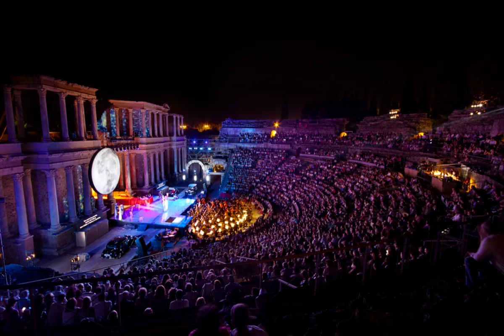
- 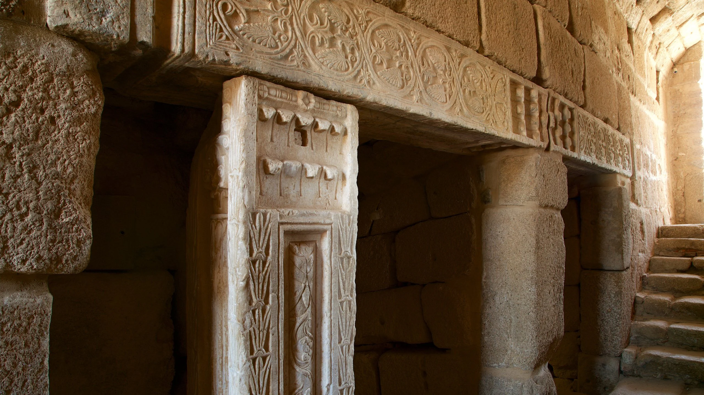
- 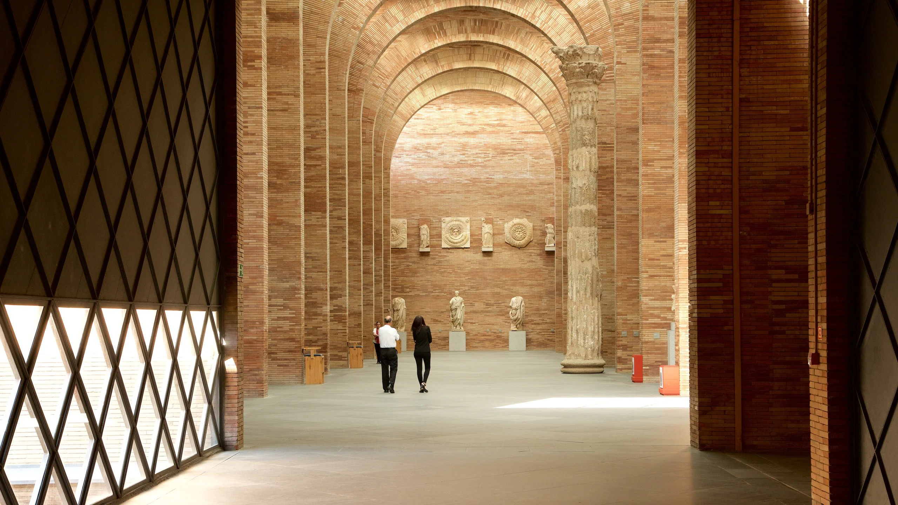
- 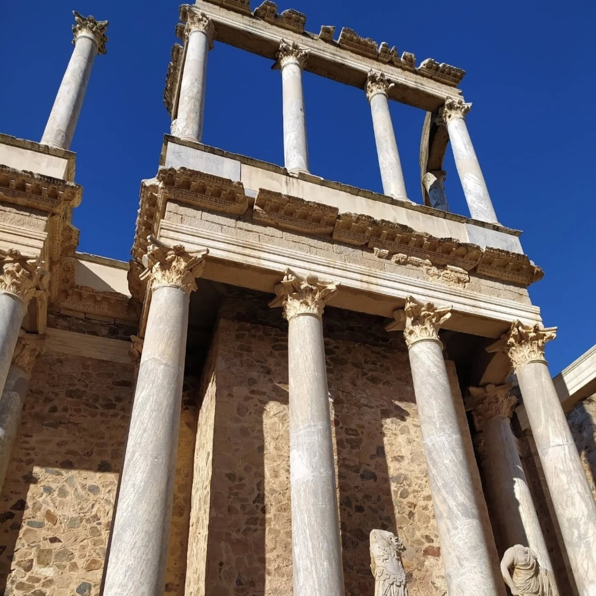
- 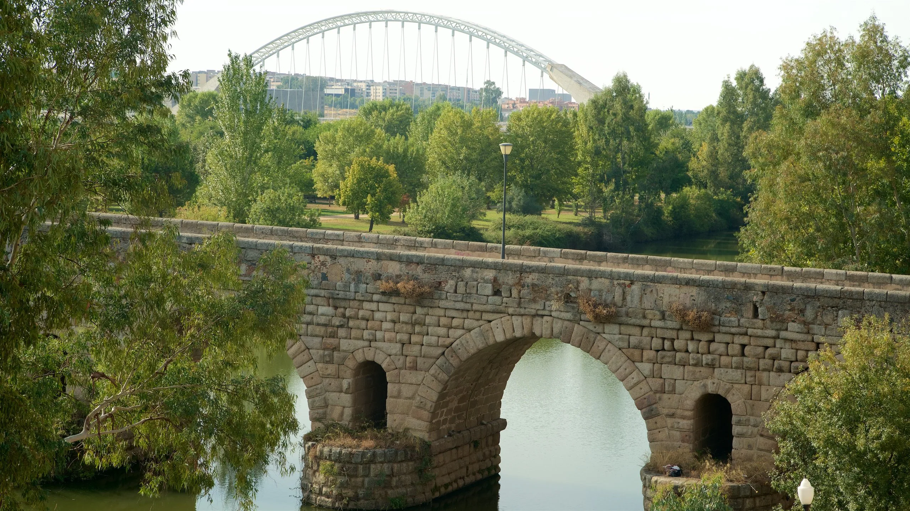
- 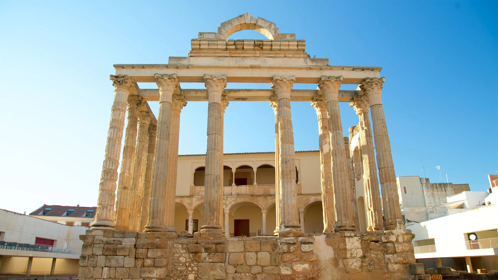
- 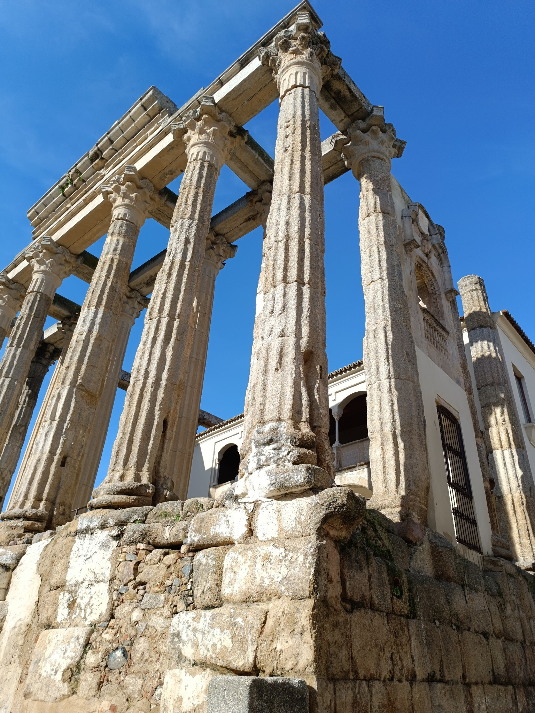
- 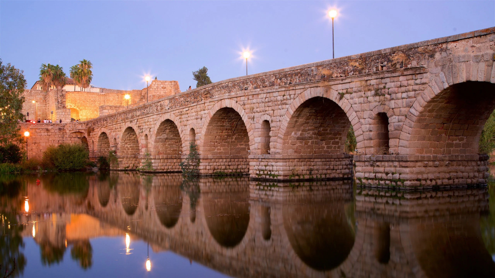
- 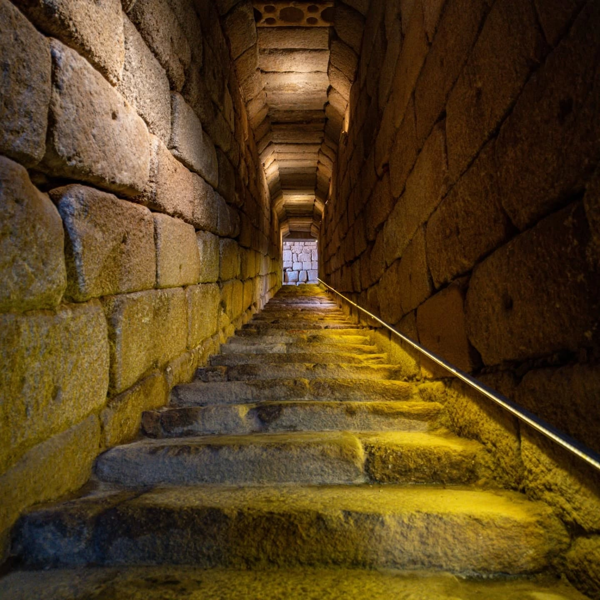
- 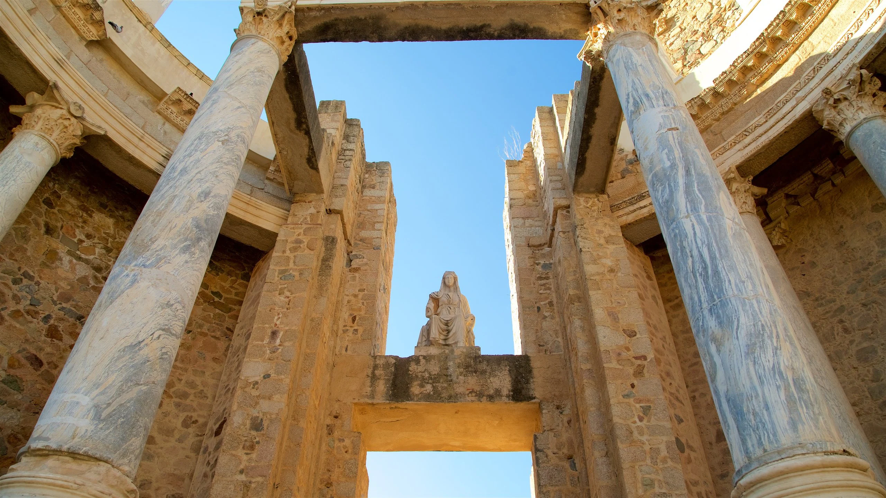
- 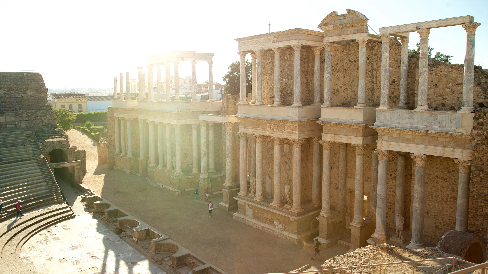
Mérida: Un viaje extraordinario
Sumérgete en la historia milenaria de Mérida, Patrimonio de la Humanidad, con este vídeo oficial de “Ciudades Patrimonio”. Descubre sus monumentos romanos emblemáticos, la vibrante cultura local y la belleza del paisaje urbano, todo a través de imágenes cautivadoras que presentan un recorrido visual por el legado emergitense.
Mapa de Mérida
Información de interés
Eventos culturales actuales
Disfruta de una agenda cultural completa que combina teatro clásico, recreaciones históricas, cine, música y actividades de barrio. Mérida en 2025 se viste de fiesta con propuestas para todos los públicos, destacando:
Tarifas y horarios
La entrada conjunta (válida varios días) permite el acceso a todos los recintos gestionados por el Consorcio (Teatro, Anfiteatro, Alcazaba, Circo, Casa del Mitreo, Cripta Santa Eulalia, Morería, etc.)
Guias y planos
Descarga guías oficiales, planos turísticos y mapas interactivos que te ayudarán a planificar tu visita por Mérida. Incluyen itinerarios por monumentos, recorridos temáticos, rutas accesibles, apps móviles y contenidos didácticos en español e inglés.